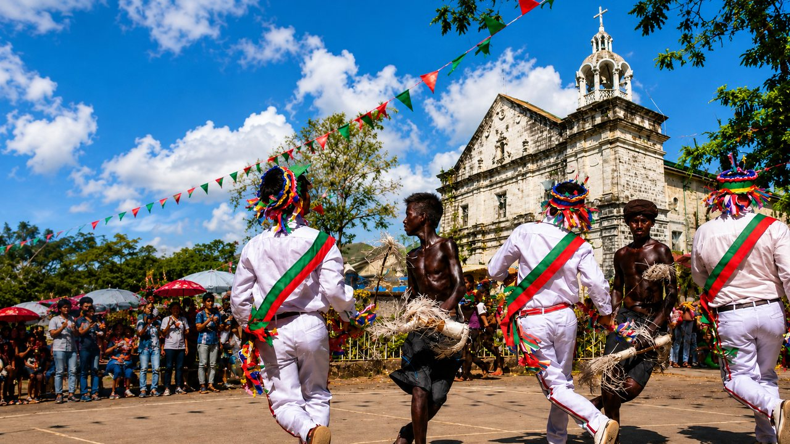

Lanom
n.
water
tubig
Sambal Tina
Discover Masinloc through its people, culture, places, businesses, and ideas.
Four ways into Masinloc.
What we are building for Masinloc.
Place
Each one photographed where it actually is, and named with the barangay it belongs to.
Sta. Rita, Masinloc
A river crossed by a suspension bridge in Sta. Rita, and part of Masinloc's inland freshwater landscape.
Masinloc, Zambales
An island on the Masinloc coast, and part of the town's marine and coastal environment.
Taltal, Masinloc
A river pool in Taltal used for swimming, in Masinloc's inland uplands.
Masinloc, Zambales
A stone church in the Masinloc town centre, and the town's best known heritage landmark.
Sta. Rita, Masinloc
A cave with flowstone formations in Sta. Rita, in Masinloc's inland uplands.
Masinloc, Zambales
A sandbar with a stilt guesthouse on the Masinloc coast, and a place to stay by the water.
Inhobol, Masinloc
Open grass hills in Inhobol, and part of Masinloc's inland upland country.
Masinloc, Zambales
A public seafront walk in the Masinloc town centre, and the site of the town's MASINLOC sign.
Lanom water · tubig
Language
n.
water
tubig
Sambal Tinan.
crab / crabs
alimasag / alimango
Sambal Tinan.
sibling
kapatid
Sambal Tinan.
plant / plants
halaman / mga halaman
Sambal Tinan.
river
ilog
Sambal Tinan.
egg
itlog
Sambal TinaTanda mo doman?
The archive holds 5,125 entries, every one carrying the page it was copied from. Alongside it sits the living usage 18 words confirmed by the people who still speak them, kept separate so neither pretends to be the other.
The record
Masinloc’s written history is mostly a language, and that language is mostly one damaged archive. Here is what we hold, and exactly how sure we are of it.
Read straight through, entry by entry, and transcribed as it stands. Nothing corrected on the way past.
Read separately, then matched against the body. Where the two agree, the reading is firm.
Every unclear glyph revisited on its own and rated. Where it stays unclear, it is published unclear.
Four entries, as they actually sit in the record
Archive p. 189
lanoman
v.
water
Resolved against a second source.
Well supported
SOURCE SUPPORTED — RESOLVED
Archive p. 134, 196
abagat
n.
rain
Cross-checked between the main body and the printed index.
Well supported
INTERNAL DUAL-LAYER SUPPORT — READABLE BETA
Archive p. 123
aapo-apon
v.
pet
Readable in the main body, not yet confirmed elsewhere.
Readable
MAIN-SOURCE SUPPORTED — READABLE BETA
0 entries still read like the last one. Every one is left in the open, because a tidy invention would outlive us in a language with very little written down.
Event history — dates, names, what happened when — is not here yet. Verified History stays deliberately empty until there is something with a source behind it, and oral accounts will always be marked as what they are. See how we are gathering it.
Community
If Sambal Tina is the language you grew up with, you can settle an entry faster than any amount of squinting at a damaged page. Here is exactly what happens when you send one.
The word, what it means, and how you want to be credited.
Nothing is published automatically. It is compared with what we already hold.
An editor confirms the reading and records what was checked.
If you asked to be credited, it is listed on the dictionary page. That is the only way a name gets there.